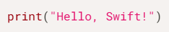
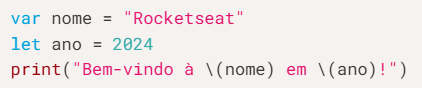
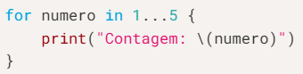
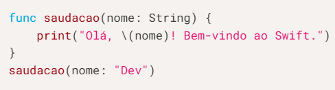
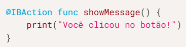

O que é Swift e Por que aprender?
Swift é uma linguagem de programação poderosa e intuitiva criada pela Apple em 2014 para construir aplicativos em iOS, macOS, watchOS e tvOS. Ela foi projetada para ser rápida, moderna e fácil de usar, oferecendo uma sintaxe limpa e muitos recursos que ajudam os desenvolvedores a escrever código mais seguro e eficiente. Swift é altamente considerada por seu desempenho, legibilidade e recursos de segurança, como gerenciamento automático de memória e suporte integrado para tratamento de erros. Além disso, Swift funciona perfeitamente com as estruturas da Apple, como UIKit e SwiftUI, tornando-a a linguagem ideal para desenvolver aplicações no ecossistema da Apple.
Aprender Swift oferece diversas vantagens:
1. Desenvolvimento para o ecossistema Apple: Swift é a linguagem principal para criar apps para iPhone, iPad, Mac, Apple Watch e Apple TV.
2. Linguagem moderna e segura: Swift incorpora os mais recentes conceitos de programação e possui recursos de segurança que ajudam a evitar erros comuns.
3. Alto desempenho: Swift é uma linguagem compilada otimizada para oferecer excelente desempenho.
4. Comunidade ativa e crescente: A comunidade Swift é vibrante e oferece amplo suporte e recursos para desenvolvedores.
5. Código aberto: Swift é uma linguagem de código aberto, o que significa que é gratuita para usar e distribuir.
Instalação e Configuração do Ambiente Swift e XCode
Para começar a programar em Swift, você precisará instalar o Xcode, o ambiente de desenvolvimento integrado (IDE) da Apple, que está disponível gratuitamente na App Store do macOS. O Xcode inclui o compilador Swift, bibliotecas e ferramentas necessárias para criar, testar e depurar aplicativos Swift.
1. Baixe o Xcode na Mac App Store ou no site da Apple Developer.
2. Instale o Xcode seguindo as instruções na tela.
3. Após a instalação, inicie o Xcode.
4. Crie um novo projeto ou use um playground para experimentar o código Swift.
Playgrounds são ambientes interativos onde você pode escrever código Swift e ver os resultados imediatamente, sem a necessidade de criar um projeto completo. Eles são ideais para aprender a sintaxe básica e experimentar novos recursos da linguagem
Sintaxe Básica e Fundamentos da Linguagem Swift
Swift possui uma sintaxe clara e concisa, facilitando a leitura e escrita do código. Alguns dos fundamentos da linguagem incluem:
1. Variáveis e constantes: Variáveis são usadas para armazenar valores que podem mudar ao longo do tempo, enquanto constantes armazenam valores que não podem ser alterados.
2. Tipos de dados: Swift oferece vários tipos de dados, como Int para números inteiros, Double para números de ponto flutuante, Bool para valores booleanos (verdadeiro ou falso) e String para texto.
3. Operadores: Swift suporta uma variedade de operadores para realizar operações matemáticas, lógicas e de comparação.
4. Estruturas de controle: As estruturas de controle, como if, else if, else e switch, permitem que você execute diferentes blocos de código com base em condições.
5. Loops: Os loops, como for e while, permitem que você execute um bloco de código repetidamente.
6. Funções: Funções são blocos de código reutilizáveis que realizam uma tarefa específica.
Tipos de Dados e Coleções em Swift
Swift oferece uma variedade de tipos de dados para representar diferentes tipos de valores. Além dos tipos básicos como Int, Double, Bool e String, Swift também fornece tipos de coleção poderosos:
Arrays: Arrays são coleções ordenadas de valores do mesmo tipo.
Sets: Sets são coleções não ordenadas de valores únicos do mesmo tipo.
Dictionaries: Dictionaries são coleções de pares chave-valor, onde cada chave é associada a um valor.
Programação Orientada a Objetos (POO) em Swift
Swift é uma linguagem orientada a objetos, o que significa que ela suporta os princípios da POO, como encapsulamento, herança e polimorfismo.
1. Classes: Classes são modelos para criar objetos. Elas podem conter propriedades (variáveis) e métodos (funções).
2. Objetos: Objetos são instâncias de classes.
3. Herança: Herança permite que uma classe herde propriedades e métodos de outra classe.
4. Polimorfismo: Polimorfismo permite que objetos de diferentes classes sejam tratados de forma uniforme.
Optinals e Tratamento de Erros em Swift
Optionals são um recurso importante em Swift que ajudam a lidar com a ausência de um valor. Um optional pode conter um valor ou ser nil, indicando que não há valor presente. Para acessar o valor de um optional, você precisa desembrulhá-lo usando um dos seguintes métodos:
1. Forced unwrapping: Usar o operador ! para forçar o desembrulho do optional. No entanto, se o optional for nil, isso causará um erro em tempo de execução.
2. Optional binding: Usar if let ou guard let para desembrulhar o optional de forma segura e executar um bloco de código somente se o optional contiver um valor.
3. Nil coalescing operator: Usar o operador ?? para fornecer um valor padrão caso o optional seja nil.
Swift também possui um sistema de tratamento de erros robusto que permite que você lide com erros de forma controlada. Você pode usar try, catch e throw para capturar e tratar erros que podem ocorrer durante a execução do seu código.
FrameWorks e Libraries Populares em Swift
Swift possui um ecossistema rico de frameworks e bibliotecas que podem ajudá-lo a acelerar o desenvolvimento de seus aplicativos. Alguns dos frameworks e bibliotecas mais populares incluem:
1. UIKit: Framework para criar interfaces de usuário para aplicativos iOS e tvOS.
2. SwiftUI: Framework moderno e declarativo para construir interfaces de usuário em todas as plataformas Apple.
3. Combine: Framework para processamento de dados assíncronos e reativos.
4. Vapor: Framework para construir aplicativos web e APIs em Swift.
Escrevendo seu Primeiro Código
No Xcode, crie um novo playground (um ambiente interativo para aprender Swift). Digite o seguinte código:

Com apenas essa linha, você verá "Hello, Swift!" aparecer no console.
Explorando os fundamentos
Aqui estão alguns conceitos básicos que você pode experimentar no playground:
Variáveis e constantes
Use var para criar variáveis e let para constantes:

Estruturas de controle
Explore loops e condicionais:

Funções
Organize seu código em funções:

Criando seu primeiro projeto
Depois de se familiarizar com os fundamentos, é hora de criar um aplicativo básico no Xcode.
1. Inicie um novo projeto: Selecione "iOS App" e configure os detalhes do aplicativo.
2. Adicione uma interface: Use o Interface Builder para arrastar e soltar elementos, como botões e labels.
3. Implemente a lógica: Conecte os elementos visuais ao código Swift no arquivo ViewController.swift.
Um exemplo simples é criar um botão que exibe uma mensagem ao ser clicado. Experimente adicionar a seguinte ação:

Recursos e dicas para aprofundar
1. Swift Playgrounds: Um aplicativo interativo disponível no iPad e no Mac, perfeito para iniciantes.
2. Documentação oficial: Acesse o Swift.org para explorar a documentação completa e as novidades da linguagem.
3. Comunidades de desenvolvedores: Participe de fóruns e eventos como o WWDC para se conectar com outros devs. E pode se juntar à comunidade da Rocketseat, a maior comunidade de desenvolvedores da América Latina, no Discord. Lá você encontrará milhares de pessoas apaixonadas por programação, prontas para trocar ideias, tirar dúvidas e compartilhar conhecimento.
Conclusão
Swift é a chave para transformar ideias em aplicativos incríveis e conquistar um lugar de destaque no mundo da programação. E aqui vai um convite especial: que tal mergulhar ainda mais fundo nesse universo? No vídeo a baixo a Gi Moeller te pega pela mão para explorar o universo Swift na prática. Nele você vai dar o primeiro passo para conhecer melhor o ecossistema dessa linguagem criada pela Apple, perfeita para o desenvolvimento de apps mobile e que oferece um processo de programação eficiente e intuitivo.
Introdução ao SwiftUICursos
Udemy | Swift Essencial: Dominando os FundamentosAlura | Swift: Entendendo a Linguagem